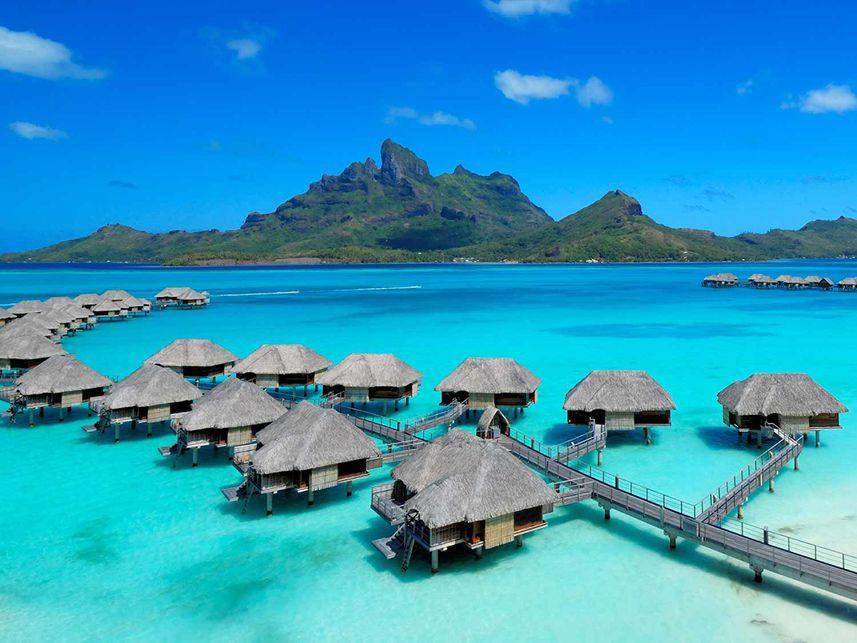

Una Aventura Inolvidable
Hace unos meses emprendí un viaje que me llevó a descubrir lugares increíbles y vivir experiencias que difícilmente olvidaré.

El Viaje
El recorrido comenzó temprano por la mañana. Durante el camino pude disfrutar de paisajes naturales, conocer nuevas personas y descubrir lugares que nunca había visitado.
Cada etapa del viaje presentó nuevos desafíos, pero también momentos únicos que hicieron que la experiencia fuera mucho más especial.
La Comida
Una de las mejores partes del viaje fue probar la gastronomía local. Probé platos tradicionales y descubrí sabores completamente nuevos.
La comida terminó convirtiéndose en una parte fundamental de la aventura y en uno de los recuerdos que más atesoro.